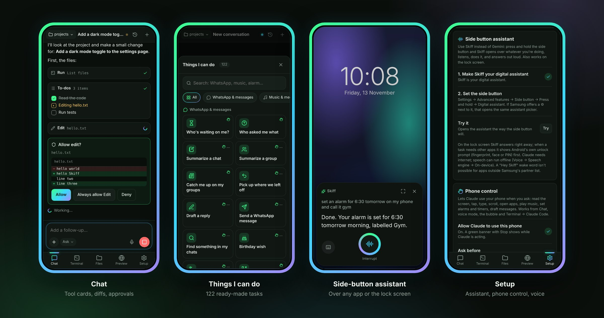
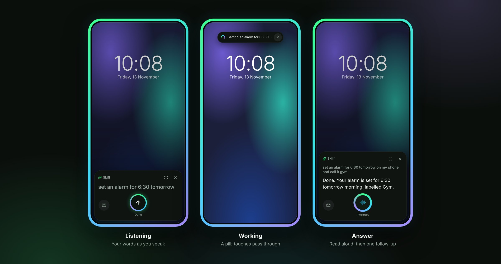
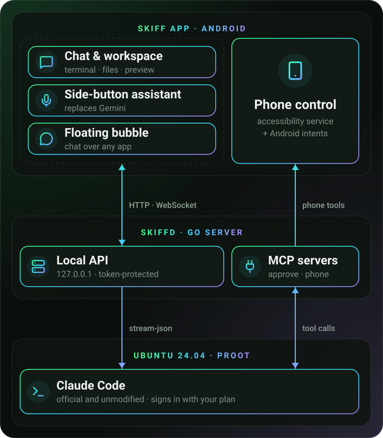

Claude Code
in your pocket.
Skiff puts a real Ubuntu on your Android phone, installs the official Claude Code inside it, and gives it a home made for thumbs. A chat with tool cards and diffs, terminals, files and a preview pane. Hands that can use your phone. A side-button assistant that replaces Gemini.

Highlights
The whole Claude Code, made for thumbs.
Not a remote, not a wrapper around a web chat. Claude Code runs on your phone, with your own subscription, and Skiff gives it a touch-first home.
Claude Code, for real
Ubuntu 24.04 under proot, Claude Code from Anthropic's own installer, your own subscription. Sign in with /login; Skiff never sees your credentials.
A chat made for thumbs
Streaming answers, tool cards, inline diffs, Allow / Deny, questions and plans as cards, modes and models, past conversations across projects.
Hands on your phone
Reads the screen, taps, types, scrolls, opens apps, plays music, sets alarms. Risky actions ask on screen first, with a Stop banner.
Side-button assistant
Hold the side button and talk. A small card listens, works, answers out loud and gets out of the way, even on the lock screen.
122 things it can do
Catch up on WhatsApp, play your liked songs, morning briefing, track orders, review my changes. One tap each.
Voice that knows when you're done
Phone speech, on-device or Whisper. Music pauses while it listens, noise is filtered, every turn ends cleanly.
Floating bubble
A chat head over every app with a gradient ring that turns while Claude works. Questions pop it open; it tucks away while Claude taps.
Terminal, files, preview, GitHub
xterm.js with an extra-keys row, a CodeMirror editor, a preview pane for dev servers, and GitHub sign-in, repo picker and clone.
The side-button assistant
One card.
One button.
Replace Gemini with Claude. Hold the side button over any app or the lock screen, say what you need, and put the phone back in your pocket.
- 1Listening. Your words appear as you speak, and Claude starts warming up before you finish.
- 2Working. The card shrinks to a pill so your taps reach the app underneath.
- 3Answer. A short, spoken-style reply is read aloud; it listens once more and closes when you're done.

Things I can do
122 tasks, one tap each.
A ready-made library for your phone, your projects and your day. Tap one, fill in a blank if it asks, and Claude takes it from there.
Get started
From APK to /login in ten minutes.
You need an arm64 phone with Android 11 or newer, Wi-Fi, and your own Claude subscription.
- Download and installGrab the APK from Releases and open it on your phone.
- Setup → InstallSkiff downloads Ubuntu and Claude Code: about 250 MB, 3–10 minutes on Wi-Fi.
- Sign inTerminal → + → Claude Code, type
/loginand sign in with your own account. - Turn on the fun part (optional)Phone control, the side-button assistant, the chat bubble, and unrestricted battery so long tasks keep running.
Play Protect
It may say the app "was built for an older version of Android": choose Install anyway. In India and some other countries it blocks apps with an accessibility service outright. Play Store → profile → Play Protect → ⚙ → turn off Scan apps with Play Protect, install, then turn it back on.Optional setup
- Phone control: Setup → Phone control → Turn on
- Side button: Setup → Side button assistant → Choose Skiff, then Settings → Advanced features → Side button → Press and hold → Digital assistant
- Bubble: Setup → Chat bubble
Good to know
Terminal → Claude Code is interactive and uses your plan's normal limits. Chat and the assistant use headless mode (claude -p), which since June 15, 2026 draws on your plan's separate monthly Agent SDK credit.
How it works
Small, local, and private.
Everything runs on the phone. No relay, no account with Skiff, nothing between you and Anthropic.
skiffd
A static Go binary inside the APK. It serves the UI, terminals, files and the chat bridge on 127.0.0.1, guarded by a random per-launch token.
The chat bridge
Chat drives Claude Code's documented stream-json mode. Permission prompts arrive through a small MCP server and become Allow / Deny cards.
Phone tools
An MCP server Claude Code calls; the app carries the actions out through an accessibility service and Android intents.

More in architecture, phone control and assistant.
Build from source
No Gradle.
No Android Studio.
build.sh uses the plain Android tools. Keep the key it creates in keys/: Android only updates an app signed with the same key.
Desktop development and the fake Claude Code for testing are in docs/building.md.
$ sudo apt install openjdk-17-jdk-headless aapt \ dalvik-exchange zipalign apksigner $ (cd web && npm ci) $ ./build.sh # → build/skiff.apk
android/The app (Java): WebView shell, foreground service, phone control, bubble, digital assistant
server/skiffd (Go): local API, terminals, chat bridge, MCP servers, setup, Whisper
web/The UI (Preact + htm): the app and the tiny assistant bundle
test/A fake Claude Code for testing chat and phone pipelines without an account
docs/Architecture, phone control, assistant, building, and this site
Roadmap
Where Skiff sails next.
See the changelog for what has shipped so far.
Put Claude Code in your pocket.
One APK. Your phone, your subscription, your code.